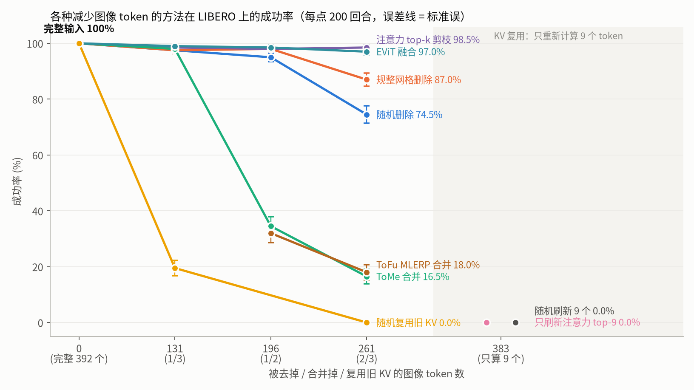
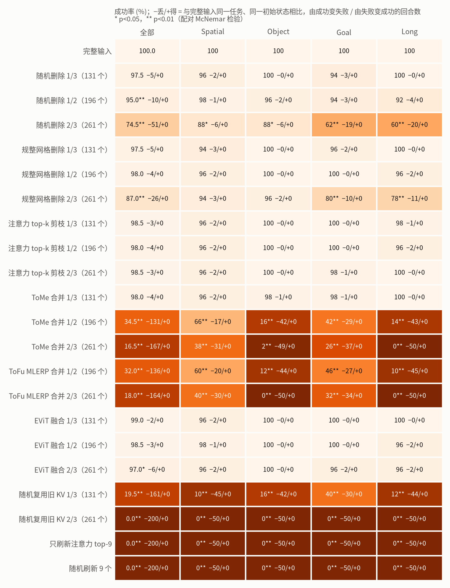
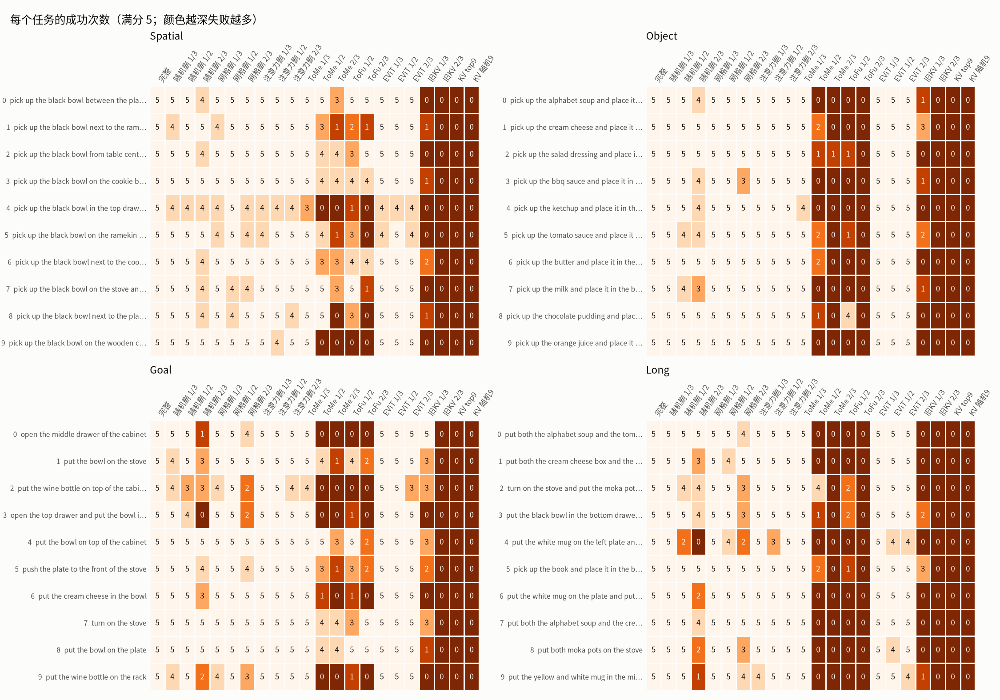
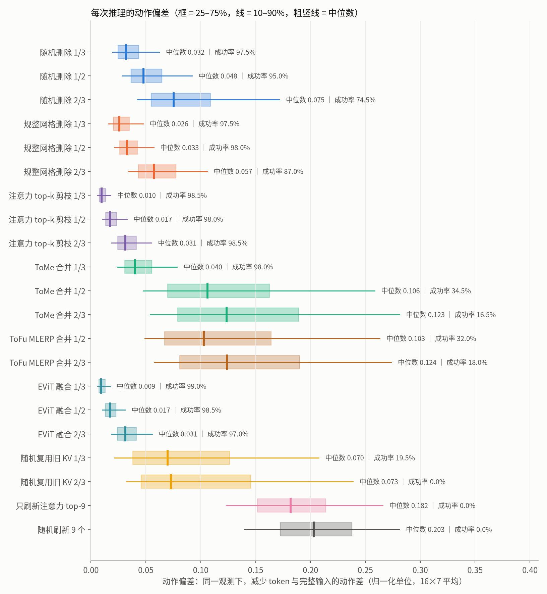
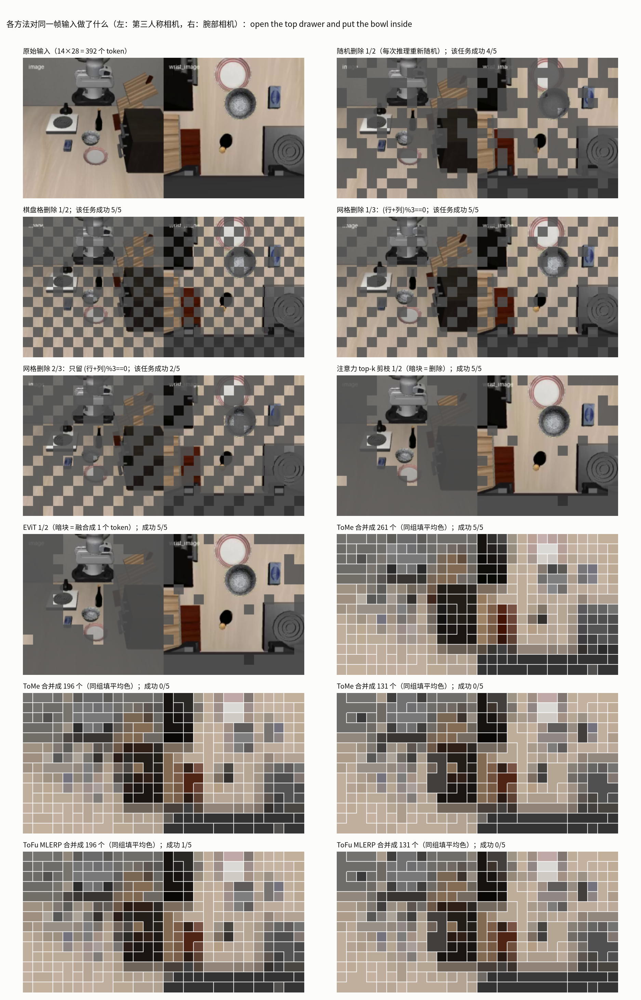
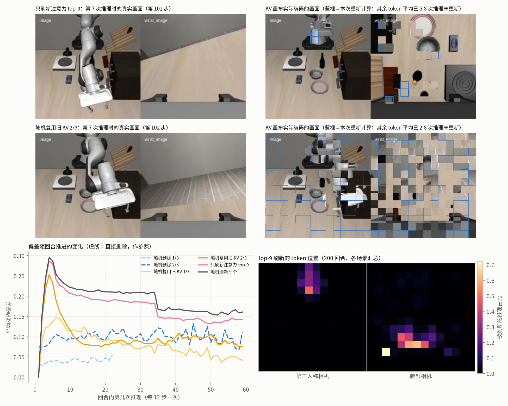

LIBERO：减少图像 token 的几种方法对比（ImageWAM-FLUX.2-4B，OSMesa 渲染，每个条件 200 回合）
- 随机删除：每次推理重新随机选 token，在注意力中屏蔽（等价于从序列中拿掉）。
- 规整网格删除：固定的斜格 / 棋盘格图案，每次推理相同。
- ToMe 合并：在 VAE latent 上做二分图相似度匹配，把相似 token 按大小加权平均合并，并在注意力上加 log(大小)。
- 复用旧 KV：被选中的 token 不重新计算，每层的 K/V 直接取该 token 上一次被计算时的值（每回合第一次推理全算）。
top-9 = 只重新计算上一次推理中动作注意力最高的 9 个 token；随机 9 = 随机选 9 个重新计算。

按注意力保留 token（top-k 剪枝、EViT）在去掉 2/3 时仍有 98.5% / 97.0%；规整网格 87.0%，随机 74.5%；ToMe 和 ToFu 在 1/2 以上崩溃；复用旧 KV 在 1/3 就只剩 19.5%。

每个条件 200 回合（4 个 suite × 10 任务 × 5 初始状态），与完整输入逐回合配对检验。

逐任务的成功次数；ToMe/ToFu 在 Object 和 Long 上几乎全军覆没，注意力选择在所有任务上都接近满分。

同一观测下与完整输入的动作差：注意力选择去掉 2/3 的偏差（中位数 0.031）比随机去掉 1/3（0.032）还小。

同一帧上各方法的样子：注意力保留的是机械臂、碗、盘子和腕部视野里的物体；ToMe/ToFu 把背景和物体混成色块。

复用旧 KV：模型实际'看到'的是几次推理之前的夹爪和物体位置（右上拼贴）；偏差在头几次推理就冲高。